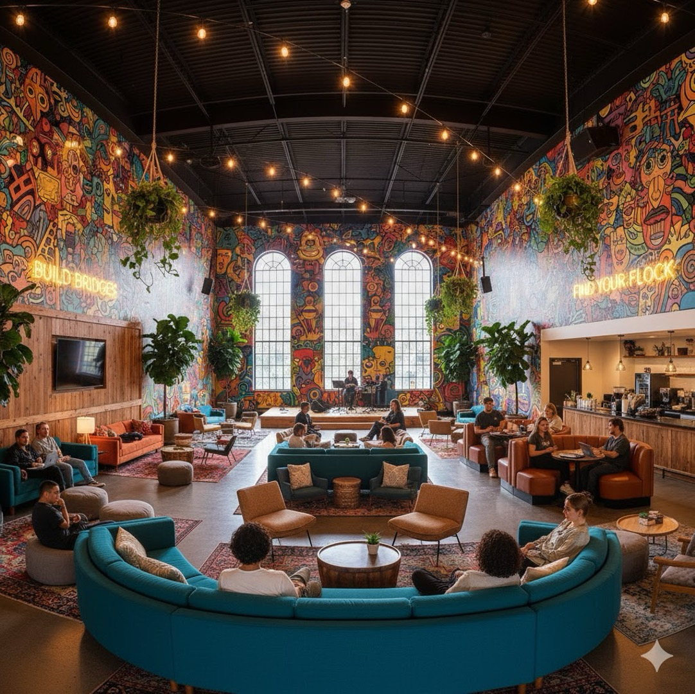
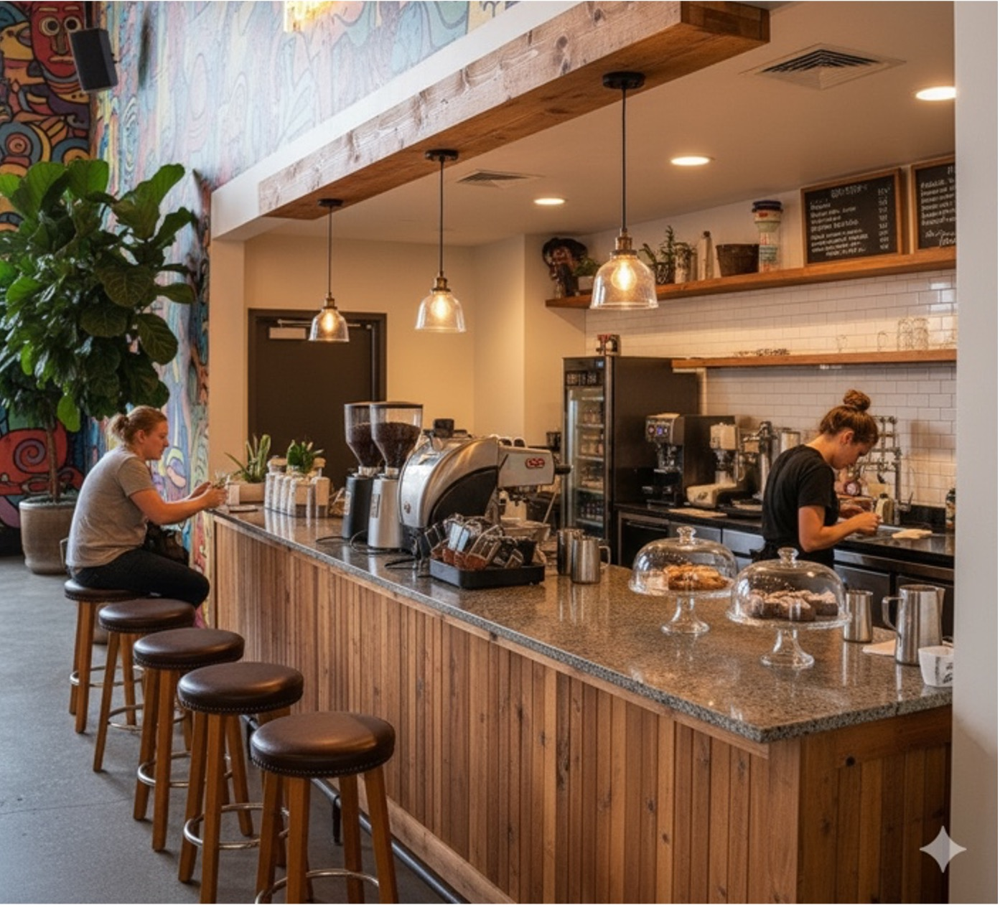
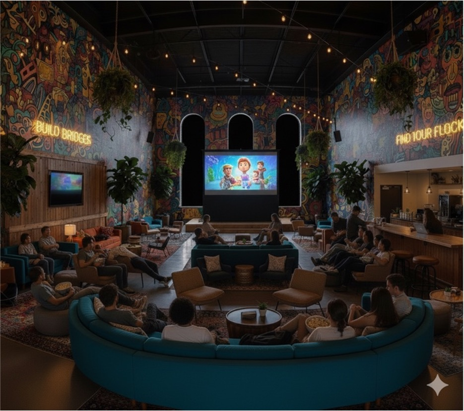
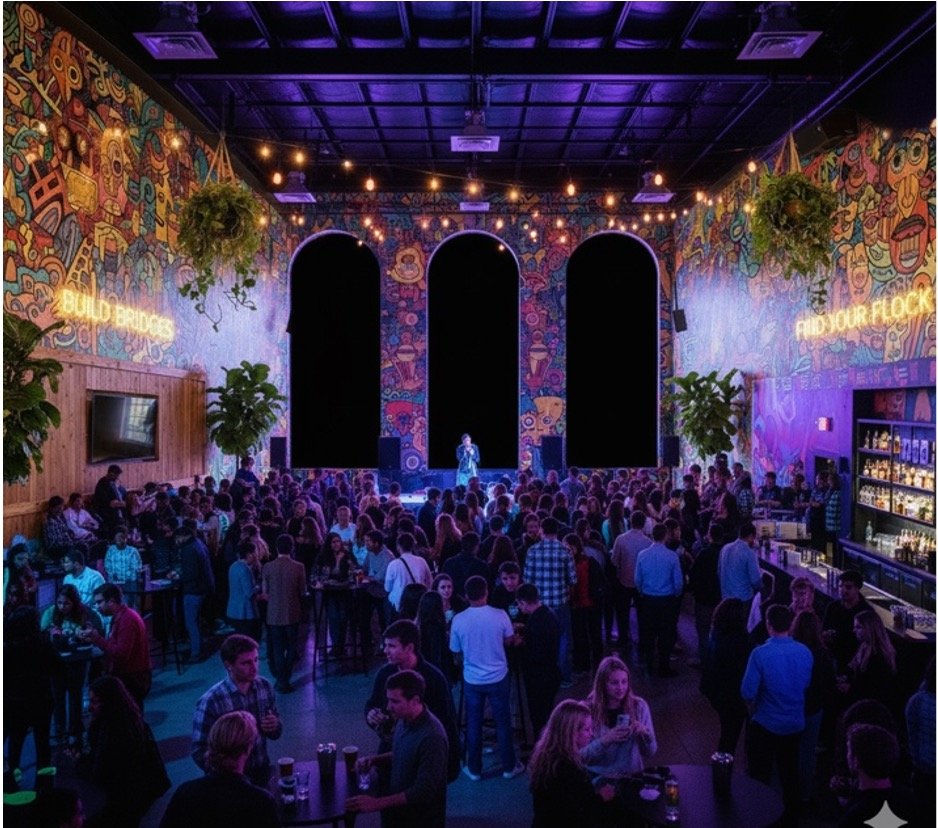
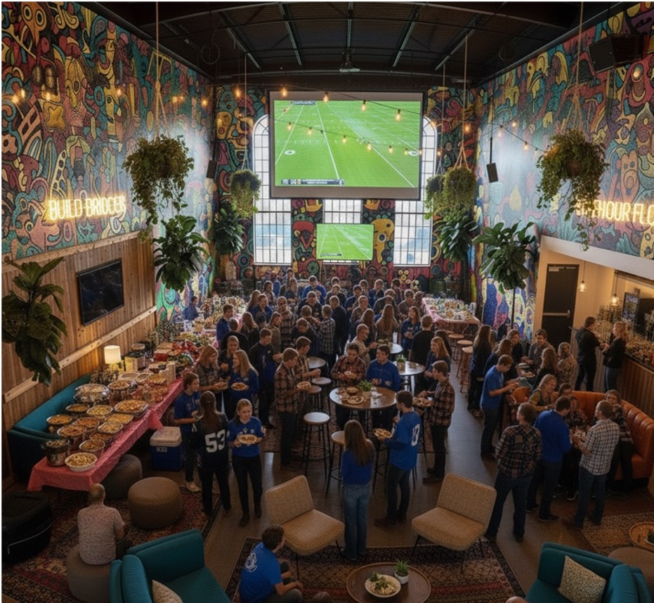

A student-led initiative to transform the Founders Lounge into a vibrant, inclusive social hub — built by students, for students.

ANNUAL LOST REVENUE
Between 2023–2024, Elmhurst lost 538 students at an average of $34,655 per student in tuition revenue.
TOTAL INVESTMENT
Full build-out including café, smart lighting, furniture, murals, technology, and a Community Coordinator.
BREAK-EVEN POINT
Retaining just 9 students at average tuition covers the entire project cost — the ROI case is undeniable.
Elmhurst University students face a community and belonging crisis. Outside of sports or Greek life, students have very little sense of community. Both commuter and resident students spend minimal time in campus spaces — they attend class, grab a meal, and leave.
The spaces that exist often feel like students are an afterthought. The Founders Lounge is too formal and sterile — cold, library-like, and frequently displaced by presentations and administrative meetings. The Roost is crowded, basement-level, and designed around eating, not socializing. Students are left with no comfortable, inviting space to simply exist and build relationships.
This lack of belonging directly drives unenrollment. Students need a reason to come and stay on campus beyond class obligations. That reason is a true Third Place — the living room between school and home where community is built organically.
A study of 355 students found that sense of belonging declines significantly as students progress through college — most sharply among first-generation students, female students, and students from underrepresented racial and ethnic backgrounds.
Built informal social spaces directly influence students' sense of belonging. Institutions that invest in student-centered common areas see stronger peer connections and greater institutional attachment.
Third places are described as "the living room of society" — spaces easy to enter, inexpensive, and recurring. Virginia Tech's research confirms these spaces must be accessible to all students regardless of background or affiliation.
UChicago's Ex Libris Café and Harper Library Lounges created informal spaces where students escape isolation, build friendships, and feel embedded in campus culture — the exact model The Welcome Project proposes.
A bottom-up revitalization of the Founders Lounge — designed with students, run by students, and built to last.
The Founders Lounge is transformed with cozy furniture arranged for friend groups, colorful sensory-friendly lighting, student-created murals representing campus identities, and an indoor garden cultivated by biology and ecology students.
A Chartwells-operated coffee bar gives students a daily reason to spend time in the space. For 21+ events, the bar doubles as a revenue-generating alcohol bar — directly funding future student programming.
A Student Community Board organizes events with no organization affiliation required: semi-formal dances, movie nights, indoor tailgates, live entertainment, vendor days, and major vs. major games — all without a chaperoned feel.
A new OBI-hired Community Coordinator ($49,920/yr) provides consistent staff oversight while keeping the space student-driven. This ensures accountability without the formal, institutional atmosphere that currently keeps students away.
ADA-accessible seating and layout in the elevator-accessible Frick Center. Quiet corners alongside social zones, sensory-friendly neutral lighting, and intentional furniture placement ensure every student feels welcome.
Art students design murals that reflect the diversity of campus life. Every inch of the space signals to students: this was made for you, by people like you. Belonging starts with seeing yourself in a space.




From board approval to grand opening — a clear, actionable path to launch by Fall 2027.
Fall 2025 – Spring 2026: Board approval, Community Coordinator hired, student surveys conducted, needs assessment completed, and initial design concepts drafted.
Summer 2026 – Spring 2027: Space finalized, floor plan drafted, budget approved. Furniture, décor, flooring, murals, and greenery planned and installed.
Summer 2027: TVs, sound systems, coffee counter construction, and greenery installed. Student Community Board formed. Campus marketing rollout begins.
Fall 2027: Grand opening event launches the space. Weekly large-scale events activate the lounge and show students its full potential from day one.
Spring 2028 onward: Semesterly evaluation reports, KPI tracking — event attendance, daily occupancy, student feedback — and annual adjustments for sustainability.
The current campus model puts students in a passive role. Spaces feel like students are permitted to be there — not invited. Events are organization-gated, leaving independent students — especially commuters — with little to participate in and no community to call their own.
The Welcome Project flips this entirely. By involving students in the design, management, and programming of the space, it sends a clear message: this campus is yours. The Student Community Board gives every student agency without requiring long-term organizational commitment.
Large-scale, non-chaperoned events — semi-formals, concerts, movie nights, indoor tailgates — give students reasons to show up, get ready, and connect. The "build it and they will come" model isn't sufficient alone. But a well-designed space plus consistent, student-driven programming creates the community flywheel Elmhurst University needs to retain students and grow.
Review the full cost breakdown and slide deck to see the complete proposal — including budget, timeline, funding sources, and KPIs.